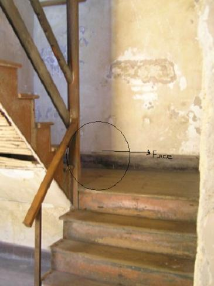
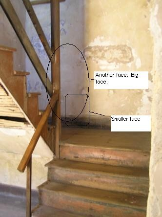
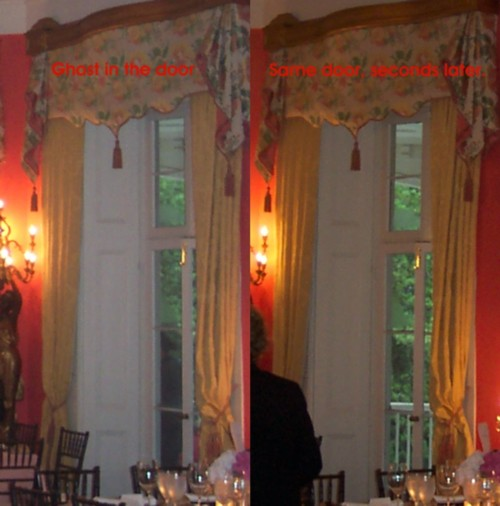

|
Click on any of the titles in the option box below to view the photo:
The Aiken-Rhett House is located at 48 Elizabeth Street in Charleston, South Carolina.
The Aiken-Rhett House was built in 1817 for John Robinson, a local merchant. He lived in the house for approximately eight years. He was forced to sell the house in 1825 when he lost five ships at sea. In 1827 the house was purchased by William Aiken, Sr. He didn't live there, he instead used it as rental property.
When William Aiken, Sr. died, his estate was divided between his wife and son. In 1833 his son, William Aiken, moved into the house with his wife, Harriet Lowndes. They did a lot of renovation work while they lived there, making it one of the most impressive homes in Charleston.
After William Aiken and his wife passed away, the house was owned by their daughter, Henrietta, and her husband, Major A.B. Rhett. The house was left to their children. Two of their sons, I'On Rhett and Andrew Burnet Rhett, Jr., continued to live there. In 1949, I'On purchased the house from his siblings and lived there with his wife, Frances Hinson Dill. She donated the house to the Charleston Museum in 1975. The museum owned the house until 1995. It was then purchaed by the Historic Charleston Foundation, and is operated as a museum today. For more information about the house, please see the page on their website: Historic Charleston Foundation: Aiken-Rhett House.
Many believe the house is also haunted. Many claim to see a ghostly woman roaming throughout the rooms, and some even hear footsteps.
In May 2006 I received an e-mail from JR Davis about a possible ghost in one of my photos:
I was looking at the photos of the Aiken-Rhett House in Charleston, South Carolina. In the tenth picture, if you look you can see a face in the staircase. It looks to be a slave woman, or child. Let me know what you think. It looks to me like this person is crying or moaning. Anyway, it's spooky just knowing that this place could be haunted.
JR circled the possible ghost in this photo:

In June 2006 I received another e-mail from JR Davis about this photo:
While looking at that picture I sent you, I noticed another very large face in it. I have circled it in red. Tell me what you think or what others think about this photo. I get an erie feeling about this place. Like something very bad happened there.
JR circled the second possible ghost in this photo:

In October 2006 I received an e-mail from John Ferguson, with an interesting photo from the Aiken-Rhett House:
As a guest at my niece's wedding, we were very surprised to find what appears to be a man in a three-cornered hat outside on the balcony of the second floor. This was taken as guests were entering during the reception. Several people were looking into the room at the time, and none saw this image. I think one of us would have noticed the period-dress.
Interestingly, upon following up the query with the mother-of-the-bride, she having been there for a longer period of time, also had not seen period-dressed personnel. We've never confirmed whether there are people on-site wearing period clothing or not. We just found this pic interesting.
Here is the photo he sent:

I definitely recommend visiting this house if you're ever in Charleston. Photography is not permitted in the main house, so you'll have to go there to see just how impressive it really is. You won't be disappointed!
Where do you want to go? Select your destination:
|